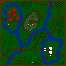
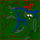
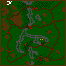
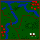
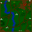
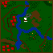
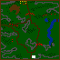
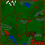

| Tekst ten pochodzi z czasopisma PC GAMER PL, z numerów 2,3,4/96. Numery poszczególnych misji w tej solucji s¹ identyczne jak w przypadku mojej. Powinno to Wam u³atwiæ skorzystanie z obydwu opisów, porównanie proponowanych taktyk i wybranie tej lepszej. |
| Gra jest ca³kowicie polska. Jej podobieñstwo do blizzardowskiego Warcrafta jest nieprzypadkowe, autorzy bowiem stwierdzili, ¿e jak siê wzorowaæ, to na najlepszych. |
|
Tomasz Jarzêbowski |
| PORADNIK TAKTYCZNY - Podstaw¹ rozwoju w Polanach jest produkcja mleka, dlatego na ten aspekt musisz zwróciæ szczególn¹ uwagê. S¹ misje, w których wystarcz¹ dwie obory (6 krów), jednak najlepiej mieæ oko³o czterech, co spokojnie zagwarantuje nam rozbudowê spo³eczeñstwa. - Podczas ataku wroga, krowy uciekaj¹ do obory, dlatego potem musisz je skierowaæ do ponownej pracy. Czasami te¿ jedno ze zwierz¹t mo¿e zablokowaæ dostêp do obory, miej wiêc na uwadze miejsce, w którym stawiasz budynek. - Trawa zjadana przez krowy odrasta po jakimœ czasie. Nie bêdziesz mia³ wiêc k³opotów z produkcj¹ mleka. - Staraj siê szybko budowaæ palisadê. Unikniesz w ten sposób najazdów nieprzyjació³. Komputer bowiem nie wpada na pomys³, aby burzyæ mury. - Gdy dysponujesz ju¿ paroma postaciami, staraj siê je ustwaiaæ w szyku. Mo¿e to byæ np. dwuszereg. Miejsca z przodu powinny byæ zarezerwowane dla ¿o³nierzy z tarcz¹ (rycerz, woje) lub drwala, z ty³u zaœ ustaw ³uczników i wojów z dzidami. - Czarownik dysponuje potê¿n¹ moc¹. Kilku w grupie mo¿e nieŸle narozrabiaæ. Uwa¿aj, jak prowadzisz atak. Mag ma tendencjê do samowolnego podejmowania decyzji i miota ogniem na wszystkie strony. Czêsto z op³akanym skutkiem, gdy¿ zabija swoich wspó³kamratów. - Podczas ataku na wioskê wroga, skoncentruj siê na zburzeniu chat wojska. Gdy to zrobisz, ustanie szkolenie ¿o³nierzy i spokojnie dokoñczysz swego dzie³a. - W lasach mo¿esz spotkaæ niedŸwiedzia. Jest bardzo groŸny i silny. Potrafi sam za³atwiæ piêciu ludzi. Mo¿e siê te¿ zdarzyæ, ¿e uda Ci siê go oswoiæ - zyskujesz naprawdê solidnego kompana. - Lecz swych ludzi tak czêsto jak to mo¿liwe. Po co szastaæ ich ¿yciem nadaremno? - Je¿eli po paru dniach rodzice zaczn¹ na Ciebie dziwnie patrzeæ, dziewczyna powie, ¿e coœ jest z Tob¹ nie halo, a chomik jakoœ nadzwyczajnie schudnie, to bêdzie oznacza³o, ¿e za spraw¹ Polan zapomnia³eœ o Bo¿ym œwiecie. Zjawisko normalne. |
| BUDYNKI - BUDYNEK G£ÓWNY - dziêki niemu mo¿esz wybudowaæ drogê, oborê, chatê drwali i myœliwych oraz chatê magów. Nie zamieszkany. - OBORA - jest miejscem wychowu trzech krów. Zwierzêta oddaj¹ te¿ do niej mleko. - CHATA DRWALI I MYŒLIWYCH - zamieszkana przez te postacie. W sumie mo¿e siê ich pomieœciæ szeœæ. Gdy masz du¿o mleka, dziêki tej chacie istnieje mo¿liwoœæ budowania chaty wojów. - CHATA WOJÓW - ¿yje w niej czterech ludków, mo¿esz te¿ budowaæ palisadê i chatê rycerza. - CHATA RYCERZA - jest Twoim szczytowym osi¹gniêciem w dziedzinie budynków militarnych. Zamieszkuje j¹ tylko jeden osobnik. - CHATA MAGÓW - zamieszkiwana jest przez panienki i staruszków - razem 3 sztuki. |
| POSTACIE - DRWAL - zajmuje siê œcinaniem suchych drzew oraz napraw¹ i budow¹ domów, palisady. W wojsku mo¿na go traktowaæ jako miêso armatnie - zawsze w pierwszym szeregu. - MYŒLIWY - nie ma zbyt du¿o pracy, dlatego wykorzystuj go w walce na odleg³oœæ. - WOJ Z MIECZEM - no ten to siê zna na rzeczy, specjalnie szkolony, wytrzyma³y i chêtny do wojaczki. Stawiaj na niego. - WOJ Z DZID¥ - precyzyjny morderca. Kilku mo¿e nieŸle namieszaæ, szczególni gdy s¹ chronieni przez swych kumpli z tarczami. - RYCERZ - nie wymaga rekomendacji. Prawdziwy master of disaster, he-man, jednak niezwykle kosztowny. Ma doœwiadczenie, które z uczestnictwem w kolejnych bitwach wzrasta. - STRZYGA-KAP£ANKA - ma czar gromobicia i coœ w rodzaju pola si³owego - jest odporna na ciosy. Jednak do czasu. Jako postaæ pos³uguj¹ca siê magi¹, traci swoje w³aœciwoœci na jakiœ czas. - KAP£AN-MAG - oprócz umiejêtnoœci dalekowidzenia, ma dar rzucania ognia na znaczne odleg³oœci. Niezwykle zabójczy, jednak czasem nie potrafi okie³znaæ swych mo¿liwoœci. |
| SOLUCJA |
|
| MISJA 1 Dysponujesz oddzia³em zbrojnym w sile 7 ludzi. Zgrupuj ich i czym prêdzej udaj siê przez most na wszchód. Tam, niedaleko jest Twoja wioska, niestety jakaœ banda w³aœnie j¹ pl¹druje. Bez problemu dasz sobie z nimi radê. Twoim kolejnym zadaniem jest naprawienie zniszczeñ w osadzie. Chêtnie zrobi¹ to drwale. Gdy skoñcz¹ pracê, stwórz w oborze krowê. Zacznie jeœæ trawê i oddawaæ mleko. Z czasem spraw jej dodatkowo dwie towarzyszki - ona i ty bêdziecie zadowoleni. Twoim zadaniem jest odnaleŸæ wszystkich wrogów i wybiæ ich w pieñ. Gdy to zrobisz - musisz rozbudowaæ wioskê do siedmiu budynków. Zostaw pracuj¹ce krowy i udaj siê na poszukiwanie nieprzyjació³. Jedna grupa znajduje siê w prawym dolnym rogu mapy, a druga w lewym dolnym. Po zabiciu ich udaj siê na pó³noc. Bêdziesz musia³ przejœæ przez w¹sk¹ k³adkê. Nidaleko tego miejsca jest œwi¹tynia - podlecz swoich ludzi. IdŸ na wschód, bêdzie tam wejœcie do wioski. Pilnuje jej doœæ silny oddzia³. Mo¿esz stworzyæ w swojej wiosce dodatkowych wojowników. Gdy ju¿ zniszczysz nieprzyjacielsk¹ osadê, wróæ do domu i pamiêtaj o stworzeniu jeszcze paru budynków. |  |
| MISJA 2 W tej misji bêdziesz musia³ trochê pospacerowaæ, gdy¿ osada wrogów jest po³o¿ona daleko st¹d. Rozpczynasz mniej wiêcej po œrodku mapy, a wszystkie drogi s¹ zablokowane przez rosn¹ce na nich drzewa. Bêdziez musia³ je wykarczowaæ - skieruj do tego zadania drwala. Jedynymi dostêpnymi œcie¿kami bêd¹ tylko te w lesie. ¯adne skróty nie wchodz¹ w rachubê. Udaj siê na pó³noc, a nastêpnie na po³udnie. Po drodze spotkasz niewielkie grupki nieprzyjació³ i nie sprawi¹ Ci raczej problemów. Znów idŸ do góry mapy, a potem na dó³. Na drodze pojawi¹ siê drzewa, po prostu je usuñ. Za nastêpnym zakrêtem jest œwi¹tynia, wiêc w miarê potrzeb ulecz swych ludzi. Wioska nieprzyjació³ znajduje siê po³udniowym-wschodzie. Gdy ju¿ j¹ zniszczysz, wróæ do punktu wyjœcia. Skieruj teraz wojaków na wschód. Wykarczuj lasek i idŸ w prawy górny róg. Wykoñcz wrogów. Ostatnich niedobitków znajdziesz w po³udniowo-wschodnim rogu mapy. Nie pozwól im uciec! |  |
| MISJA 3 Twoja wioska jest oddzielona od reszty œwiata dwoma mostami na zachodzie. Tylko stamt¹d mo¿e nadejœæ niebezpieczeñstwo. Sporadycznie bêdziesz nawiedzany przez wrogów, jednak dasz sobie z nimi radê. Stwórz krowê, a gdy bêdziesz mia³ wystarczaj¹co du¿o mleka - dwie nastêpne. Zaraz po tym wybuduj drug¹ oborê. Gdy bêdziesz mia³ ju¿ 6 krów, pozwól im pracowaæ, a sam zajmij siê rozbudow¹ armii. Niestety, jedynym dostêpnym budynkiem bêdzie tylko chata drwali i myœliwych. Teraz musisz byæ cierpliwy. Stwórz oko³o 20 ludzi i udaj siê przez most. Niedaleko znajduje siê grupa worgów. PrzeprowadŸ wojsko w prawy górny róg mapy. Znajdziesz tam stra³kê u³ozon¹ z kamieni. W okolicznych lasach s¹ wrogowie - odnajdŸ ich i zniszcz. Teraz wystarczy iœæ w pó³nocno -wschodni róg mapy, by znaleŸæ wioskê przeciwników. Obróæ wszystko w perzynê! |  |
| MISJA 4 Niezbyt fortunnie Twoja wioska usytuowana zosta³a poœrodku mapy. Nie martw siê jednak. Zrób, co ka¿ê, a wszystko bêdzie w porz¹dku. Zacznij od wyhodowania trzech ³aciatych (sorry - wszystkie krowy s¹ br¹zowe). Po lewej stronie znajduje siê œwi¹tynia - bêdziesz zmuszony do jej czêstego odwiedzania, gdy¿ co rusz, ktoœ bêdzie Ciê nachodzi³, a to z pó³nocy, a to z po³udnia. Spoko, dasz sobie z nimi radê. W miarê mo¿liwoœci (czyt. jak najszybciej) zbuduj infrastrukturê militarn¹ i powo³aj do ¿ycia paru drwali i myœliwych. Uczyli siê innego fachu, lecz chêtnie prze¿yj¹ jak¹s ciekaw¹ przygodê. PrzeprowadŸ ich przez jeden ze wschodnich mostów, tam spotkasz nieprzyjació³. Daj im do zrozumienia, ¿e nie s¹ tu mile widziani. Na pó³nocy znajdziesz wioskê - chyba wiesz, co masz robiæ! |  |
| MISJA 5 Oj, to bêdzie bardzo ¿mudna misja. Zanim wybudujesz armiê minie trochê czasu. Ale zacznijmy wszystko od pocz¹tku. Stwórz jedn¹ krowê i nastêpnie wybuduj chatê drwali i myœliwych. Musisz dzia³aæ szybko. Nastêpnym budynkiem musi byæ chata wojów. Posiadanie tego budynku wi¹¿e siê z mo¿liwoœci¹ budowy palisady - bardzo wa¿nego czynnika ekonomicznego. Postaw j¹ wiêc czym prêdzej na mostach i w w¹skim przesmyku na pó³nocy. No, to masz ju¿ problem z g³owy. Teraz wystarczy tylko budowaæ armiê i ruszaæ na wroga! Gdyby by³o Ci trochê ciasno na tym terenie, stwórz magów i wypal lasek, bêdzie od razu inaczej. Siedziba wrogów znajduje siê na po³udniowo-zachodnim krañcu mapy. Udaj siê tam, przejdŸ przez mostek i zaraz za nim, po prawej stronie znajdziesz "sza³asy" tych szubrawców. Puœæ je z dymem! |  |
| MISJA 6 Od pó³nocy zosta³eœ ograniczony górami. Postaraj siê, jak najszybciej zbudowaæ palisadê. Nie bêdzie to jednak proste. Zaatakuje Ciê oddzia³ wrogów. Pozwól im niszczyæ Twoje budynki, a tymczasem ka¿ swoim myœliwym ostrzeliwaæ napastników z krótkiej odleg³oœci. Powinieneœ daæ sobie radê z nimi. Teraz daj czadu i stwórz palisadkê. Gdy bêdziesz ju¿ j¹ mia³ - wystarczy tylko stworzyæ siln¹ armiê. Postaw na wojów i magów - bêdziesz z nich na pewno zadowolony. Musisz udaæ siê na pó³noc. Znajduje siê tam œwi¹tynia, której strzeg¹ kap³ani i ¿o³nierze - wybij ich do nogi. PrzejdŸ przez mostek i skieruj siê na zachód, a¿dojdziesz do œcie¿ki. Nastêpnie, id¹c œcie¿k¹, udaj siê w przeciwnym kierunku. Znajdziesz tam chatkê, któr¹ Twój niesamowity oddzia³ zmiecie z powierzchni ziemi. Jeœli Ci tego ma³o, udaj siê na po³udnie, tam bêdziesz mia³ nieco wiêcej pracy. PrzeprowadŸ eksmisjê miejscowej ludnoœci, a jako kierunek docelowy wybierz dla nich niebo. Jako ¿e siê œciemnia, rozpal sobie ognisko. Cha³upki siê œwietnie do tego nadaj¹. To nie koniec zabawy. Trochê dalej na pó³noc jest œwi¹tynia, której strze¿e stra¿nik. Jest on ostatnim œwiadectwem obcej dzia³alnoœci na tych terenach. |  |
| MISJA 7 Twoja wioska znajduje siê na wysepce. Zabezpiecz wojskiem wszystkie mosty. Utrzymuj ten stan przez jakiœ czas. Nast¹pi¹ ataki ze strony nieprzyjaciela, dlatego musisz siê odpowiednio przygotowaæ. Stwórz tylko jedn¹ krowê i postaw chatê drwali oraz myœliwych. Produkuj wojsko, tak du¿o, byœ odpar³ najazdy z³oczyñców. Nastêpnie przyda³yby siê dwie dodatkowe krowy, a po nich na miejsce zabitych - nowi ¿o³nierze. Druga obora pomo¿e Ci na nieco szybszy rozwój - zbuduj te¿ chatê wojów. Gdy bêdziesz posiada³ ju¿ w miarê sporo ludzi, pomyœl o trzeciej oborze i jej inwentarzu - to wiele u³atwi. Tak siê akurat sk³ada, ¿e legowisko nieprzyjaciela znajduje siê na podobnej wyspie, jak Twoja, tylko ¿e w pó³nocno-zachodnim rogu mapy. Dob¹dŸ miecza, zwo³aj ekipê i z okrzykiem: Krwi! rusz na tych badziewiarzy. Jedno jest pewne - nie maj¹ ¿adnych szans! |  |
| MISJA 8 Twoja wioska jest otoczona wod¹ i górami. W zasadzie jedynym mo¿liwym kierunkiem ataku wrogów jest po³udnie. Musisz wybudowaæ palisadê, gdy¿ tylko ona uchroni Ciê przed najazdami. Mo¿esz od razu stworzyæ trzy krowy - niech pracuj¹ na maxa. Niezbêdna oczywiœcie jest te¿ chata drwali i myœliwych. Zaraz po niej postaw chatê wojów i zmiejsca zacznij budowaæ mur. Nastêpnie wed³ug w³asnego uznania twórz armiê. Musi byæ znaczna - tak oko³o 25 ludzi. Wyrusz na poszukiwania wrogów. Kryj¹ siê w okolicznych lasach, dlatego musisz sprawdziæ wszystkie te tereny. Gdy w zastêpach leœnych zostanie jedynie zwierzyna, otrzymasz coœ specjalnego. Udaj siê na pó³noc - tak mniej wiêcej poœrodku mapy znajduje siê wioska nieprzyjació³. Choæ jest nieŸle chroniona, pod Twoim naporem na pewno siê ugnie! |  |
| MISJA 9 To zadanie ró¿ni siê nieco od poprzednich. Kierujesz grup¹ specjaln¹, której zadaniem jest odbiæ z r¹k nieprzyjaciela Twoj¹ kap³ankê Widorê. Mag i kilku wojów powinno daæ sobie radê, pamiêtaj jednak, ¿eby ich leczyæ po ka¿dej wygranej potyczce. W ten sposób unikniesz strat i bêdziesz mia³ wiêcej szans na zwyciêstwo. Udaj siê na wschód. W lasach kryj¹ siê wrogowie. Nastêpnie kieruj siê tu¿ przy prawej krawêdzi mapy na pó³noc. Tu napotkasz nieco wiêkszy opór, z racji tego, ¿e nieprzyjaciel ma w swych szeregach magów i kap³anki. Po zwyciêstwie skieruj siê wzd³u¿ œcie¿ki na zachód. Spenetruj okoliczne lasy i wybij znajduj¹cych siê w nich wrogów. Twoim miejscem docelowym jest pó³noc. Tam mieœci siê wioska, doœæ dobrza strze¿ona i tam te¿ wi꿹 Twoj¹ kap³ankê. Zniszcz wszystkich mieszkañców oraz domy i uwolnij kobietê. Pod Twoj¹ ochron¹ musi dotrzeæ do miejsca docelowgo. Gdy wejdzie na tajemny symbol, MISJA skoñczy siê. |  |
| MISJA 10 Tym razem masz dokonaæ czegoœ niezwyk³ego. Musisz eskortowaæ nie byle kogo - krowê, która od dziesiêciu misji na Ciebie pracuje. Jako ¿e zwierzak musi dotrzeæ na coroczne œwiêto, musisz wykazaæ siê nie lada umiejêtnoœciami. A w zasadzie, to nawet nie. Mo¿na wszystkich znakomicie oszukaæ i dostaæ siê we wskazane miejsce. Udaj siê na po³udnie i przejdŸ miêdzy górami na wschód. Po drodze napotkasz dwa lekko zbrojne oddzia³y - nie sprawi¹ Ci k³opotów. Niedaleko jest miejsce spotkania. WprowadŸ krowê na tajemny znak. Jest ju¿ bezpieczna. |  |
| MISJA 11 Zaczynasz w prawym dolnym rogu mapy. Niestety, masz bardzo ma³o miejsca na stawianie jakichkolwiek budynków, ale jakoœ damy sobie radê. Szybko stwórz 3 krowy, a nastêpnie tak szybko, jak to tylko mo¿liwe, chatê drwali i myœliwych. Nie twórz wojska, szkoda na razie mleka. Wybuduj chatê wojów i zacznij stawiaæ palisadê w miejscu nieco na zachód, gdzie jest niewielka przestrzeñ pomiêdzy lasem i górami. Przy budowaniu mo¿e Ciê zaskoczyæ wróg, ale to tylko jeden jego wybryk. Udaj siê te¿ szybko drwalami na zachód, a¿ do koñca mapy. PodejdŸ te¿ nieco na pó³noc. Zobaczysz, jak góry zwê¿aj¹ siê nieco. Postaw tam palisadê - zyskasz sporo terenu i mo¿esz zacz¹æ myœleæ o armii. Rozbuduj j¹ jak najlepiej. Postaw szczególnie na wojów, rycerzy (oko³o 30) i magów (12 bêdzie w sam raz). Wróg trochê zmieni³ siê i te¿ pomyœla³ o murze, a poza tym stworzy³ naprawdê siln¹ armiê. Wyrusz na pó³noc. Mniej wiêcej poœrodku mapy znajduje siê wioska. Sporo tam bêdzie roboty, ale ¿o³nierze uporaj¹ siê z przyb³êdami. W nagrodê niech na ogniu z pal¹cych siê domów upiek¹ sobie kie³baski. Nale¿a³o im siê, no nie? |  |
| MISJA 12 Znów tradycyjnie domostwo otacza akwen wody, a œciœlej mówi¹c rzeka. Tradycyjnie stwórz szybko trzy krowy, a nastêpnie chaty drwali i myœliwych oraz wojów. Nieco powy¿ej teren zwê¿a siê, jest to dogodne miejsce na palisadê. Masz du¿o miejsca, buduj, wiêc co chcesz i twórz siln¹ armiê. Gdy postawisz cztery obory, to przyp³yw mleka bêdzie natychmiastowy. Kilkunastu wojów w pe³ni wystarczy Ci w najeŸdzie na wroga. Skieruj ludzi na pó³noc (bêdzie tam paru goœci do zniszczenia) nastêpnie na zachód, a potem na po³udnie. Dotrzesz do siedliska nieprzyjaciela. Niewiele zd¹¿yli stworzyæ. Dlatego radoœæ z pl¹drowania osady bêdzie niewielka. |  |
| MISJA 13 W tej misji Twoim zadaniem jest uwolniæ kap³ankê z r¹k nieprzyjaciela. Zadanie jest o tyle ciekawe, ¿e nie poruszasz siê po tradycyjnych terenach, lecz po kilkunastu wyspach po³¹czonych ze sob¹ mostami. Zaczynasz w lewym górnym rogu mapy, dysponuj¹c oddzia³em wojowników i jednym niedŸwiedziem. Udaj siê na wschód przez most. Usytuowany jest on na górze mapy. Nie wybieraj drogi poni¿ej, gdy¿ czaj¹ siê tam dwa niedŸwiedzie i ³atwo móg³byœ straciæ kilku wojów. Posuwaj¹c siê do przodu, nie mo¿esz zapominaæ o ty³ach. Co jakiœ czas pod¹¿aæ bêd¹ za tob¹ wrogowie, ale nie powinni sprawiaæ du¿ego k³opotu. IdŸ na po³udnie, na sam dó³ mapy. Na ma³ej wysepce jest uwiêziona za drzewami strzyga. Niech czarownik j¹ zabije. Obok, po prawej stronie, jest spora wyspa. PrzejdŸ przez ni¹ i skieruj siê na pó³noc, a nastêpnie na wschód. Tam, na ma³ej wysepce, dwóch czarowników wiêzi Twoj¹ kap³ankê. Zabij stra¿ników i uwolnij niewiastê. ZaprowadŸ j¹ w miejsce oznaczone tajemnym symbolem. Jest ju¿ bezpieczna. |  |
| MISJA 14 To zadanie nie jest trudne. Posiadaj¹c dwa oddzia³y zbrojnych, na pewno dasz sobie radê. Musisz spenetrowaæ ca³y teren i wyr¿n¹æ w pieñ wszystkich znajduj¹cych siê tam wrogów. Wiêkszoœæ chowa siê po lasach, kilu napotkasz te¿, gdy bêdziesz sprawdza³ obszary leœne. Na pó³nocy znajduje siê niewielki przyczó³ek, którego chroni kilku wrogów. Dostêp do nich jest utrudniony ze wzglêdu na obecnoœæ palisady. Jednak czarownik poradzi sobie z tym fantem. Ka¿ mu spaliæ mur i zaatakuj znajduj¹cych siê za nim ¿o³nierzy. To ju¿ koniec roboty! | |
| MISJA 15 Zaczyna siê tradycyjnie. Masz niewielk¹ wioskê, musisz j¹ rozbudowaæ, stworzyæ armiê i zaatakowaæ wroga. Stwórz czym prêdzej trzy krowy - niech zabieraj¹ siê od razu do pracy. Jeœli bêdziesz dysponowa³ wystarczaj¹c¹ iloœci¹ mleka, wybuduj chatê drwali, a nastêpnie chatê wojów i jak najprêdzej palisadê. Je¿eli Ci siê uda, powinieneœ zd¹¿yæ przed atakiem. Staraj siê teraz rozbudowywaæ armiê i osadê wedlw w³asnego uznania. Wróg mo¿e sporadycznie nachodziæ Ciê, jednak po jakimœ czasie bêdzie rezygnowa³. Przesuwaj te¿ palisadê, je¿eli stwierdzisz ¿e dysponujesz zbyt ma³¹ iloœci¹ miejsca. Chc¹c atakowaæ wroga, udaj siê na wschód, a nastêpnie na po³udnie do mostu i dalej w dó³ mapy. Jest tam wioska, lecz nie atakuj jej jeszcze. Wyœlij oddzia³, omijaj¹c siedlisko nieprzyjació³, w lewy dolny róg mapy. Bêdzie tam most - przekrocz go, a zobaczysz wiêzionego swojego czarownika. Odbij go. Teraz mo¿esz spokojnie wyruszyæ i spl¹drowaæ wioskê wroga. Ma³a informacja: trzeba uratowæ czarownika przed zniszczeniem osady, gdy¿ je¿eli post¹pimy odwrotnie, to nieprzyjaciel kapnie siê o co chodzi i po prostu zabije wiêŸnia. A to niestety oznacza nasz¹ pora¿kê. |  |
| MISJA 16 Zadanie jest podobne do tego z misji 15. Nie bêdziemy jednak nikogo ratowali, ale zwyczajnie budowali armiê i naje¿d¿ali wroga. Zacznij od stworzenia od razu trzech krów. W miarê mo¿liwoœci postaw chatê drwali i myœliwych, a potem wojów i oczywiœcie stwórz palisadê. Gdy bêdziesz ju¿ bezpieczny, wybuduj drug¹ oborê. Teraz nastaw siê na jak najlepsz¹ rozbudowê armii, a gdy bêdziesz ju¿ dysponowa³ w pe³ni zadowalaj¹cym Ciê oddzia³em, wyrusz na pó³nocno-wschodni kraniec mapy. Jest tam wioska, której zniszczenie nie zajmie Ci du¿o czasu. To jednak nie koniec, gdy¿ dok³adnie po przeciwleg³ej stronie, w lewym dolnym rogu, znajduje siê druga osada. Nie ma mo¿liwoœci, by stwaia³a Ci jakikolwiek opór! |  |
| MISJA 17 Musisz dzia³aæ szybko, gdy¿ w przeciwnym razie przyjdzie banda opryszków i Ciê za³atwi. Ale spoko, oto co masz robiæ. Stwórz trzy krowy, a nastêpnie szybko chatê drwali i myœliwych oraz domek woja. Podczas budowy ktoœ zaatakuje Twoje w³oœci, pozwól by niszczy³ jeden z Twoich budynków, a tymczasem ka¿ drwalowi, by naprawia³ tê zniszczon¹ chatê, a ³ucznikowi by strzela³ do wroga z daleka. To zdaje egzamin. Gdy bêdziesz mia³ wystarczaj¹co du¿o mleka, stawiaj czym prêdzej palisadê jak najbli¿ej swojej wioski (by zaoszczêdziæ czas i materia³). Gdy zobaczysz, ¿e nadci¹gaj¹ wojska nieprzyjació³, bêdziesz ju¿ bezpieczny. Oni po pewnym czasie odejd¹ (zg³odnieli czy co?), a ty bêdziesz móg³ przesun¹æ mur nieco dalej. Postaw go najlepiej na moœcie na po³udniu i przy jeziorku na zachodzie. Zyskasz naprawdê sporo terenu. Teraz pozostaje Ci tworzenia wojska. Gdy to zrobisz, mo¿esz zaatakowaæ wioskê wroga, znajduj¹c¹ siê w lewym dolnym rogu mapy. Mo¿e siê okazaæ, ¿e mimo obrócenia w perzynê ich domostwa, nie ukoñczy³eœ misji. Rozwi¹zanie jest proste - czêœæ niedobitków chowa siê po okolicznych lasach. ZnajdŸ ich i wykoñcz! |  |
| MISJA 18 Bierzesz udzia³ w doœæ ciekawej akcji. Po ca³ej mapie rozrzucone zosta³y Twoje oddzia³y. Jedne s¹ silniejsze, drugie nieco s³absze, jednak ich iloœæ pozwala na pomyœlne zakoñczenie tego zadania. Mo¿esz d¹¿yæ do po³¹czenia siê oddzia³ów, wtedy bêdziesz dysponowa³ o wiele potê¿niejsz¹ jednostk¹. Niewa¿ne, któr¹ grup¹ ¿o³nierzy ruszysz, i tak w okolicy napotkasz kryj¹cych siê wrogów. Najwiêksze ich skupisko jest w centrum mapy i na pó³nocy (natabene obok jednej Twojej ekipy). Penetruj¹c tereny na zachodzie, natkniesz siê na œwi¹tyniê, która w tym przypadku jest miejscem przemiany. Z ka¿dego Twojego wojownika mo¿esz uczyniæ niedŸwiedzia (niez³e, no nie?), a wiadomo jak¹ dysponuje on si³¹. Kilka takich zwierzaków bez problemu upora siê z przyjació³mi, kryj¹cymi siê w okolicznych lasach. |  |
| MISJA 19 Znów typowa misja, gdzie musisz nastawiæ siê na rozbudowê wioski i armii. Poœrodku mapy znajduje siê g³ówny budynek - jedyna budowla, jak¹ aktualnie posiadasz. Postaw jak najprêdzej oborê i stwórz trzy krowy. Nastêpnie buduj to co zwykle - chatê drwali i myœliwych, chatê wojów i palisadê. Jako ¿e od zachodu i po³udnia oddzielony jesteœ wod¹, dostêp do Ciebie jest tylko od wschodu. Jednak najlepiej by³oby, gdybyœ zbudowa³ mur na dwóch mostach. Oto ich lokalizacja: jeden jest na pó³nocy, mniej wiêcej na wysokoœci wioski, a drugi na po³udniu, nieco na wschód. Musisz dzia³aæ bardzo szybko, gdy¿ mo¿e siê zdarzyæ, ¿e wrogowie zaatakuj¹, gdy bêdziesz na to najmniej przygotowany. Posiadaj¹c palisadê mo¿esz byæ spokojny o w³asny byt. Rozbudowuj wioskê i stwórz siln¹ armiê. Do zniszczenia s¹ trzy wioski. Jedna znajduje siê w lewym górnym rogu mapy, druga nieco poni¿ej, a ¿eby siê dostaæ do trzeciej, musisz udaæ siê na po³udnie. Nie bêdziesz mia³ ¿adnych problemów ze zniszczeniem tych siedlisk, gdy¿ jak sam siê przekonasz, s¹ wyj¹tkowo kiepsko chronione. |  |
| MISJA 20 Czeka Ciê wiele pracy i problemów. Teren, na którym bêdziesz stawiaæ osadê nale¿y do wyj¹tkowo nieurodzajnych. Ma³a iloœæ trawy sprawia, ¿e krowy nie maj¹ co jeœæ, ale jest na to rada. Twoja wioska znajduje siê w pó³nocno-zachodnim rogu mapy. Wyœlij wiêc dwóch drwali na wschód. Bêd¹ tam wiêksze po³acie trawy. Wybuduj oborê i stwórz krowê. Gdy bêdziesz mia³ mo¿liwoœæ, postaraj siê tak¿e o kolejne krowy. Bêd¹ sobie pracowa³y, a Ty w tym czasie wybuduj w miejscu swej wioski chatê drwali i myœliwych oraz, jak siê uda, chatê wojów. Teraz nast¹pi atak nieprzyjaciela. Napadnie na Ciebie grupa zbrojnych, której niestety nie mo¿na siê postawiæ. Je¿eli bêdziesz mia³ szczêœcie, to najad¹ samotnie stoj¹c¹ oborê. Je¿eli nie bêdziesz mia³ szczêœcia, to wróg po prostu rozniesie Tw¹ osadê na strzêpy. W pierwszym przypadku zgin¹ niestety wszystkie krowy, ale powinieneœ mieæ tyle mleka, ¿eby wybudowaæ wokó³ domostwa palisadê. Zd¹¿ysz prawie na styk. Gdy wróg podejdzie w Twoje okolice, bêdziesz bezpieczny. Niestety, nadal dysponujesz ma³¹ iloœci¹ ³¹k, ale taki ju¿ jest los. Stwórz krowê w swojej starej oborze - niech po¿ywia siê tym co jest. D¹¿ do poszerzenia swych w³oœci. Staraj siê przesuwaæ palisadê jak najdalej na wschód, a¿ do koñca mapy. Gdy to zrobisz, pozostanie ju¿ tylko stawianie budynków i tworzenie armii. Wiadomo, ¿e im wiêcej ¿o³nierzy, tym lepiej, ale w tym przypadku nie potrzbujesz potê¿nego oddzia³u. Wystarczy kilku wojów. Wioska znajduje siê w po³udniowo-wschodnim rogu mapy. Z jej zniszczeniem nie bêdziesz mia³ ¿adnych problemów. |  |
| MISJA 21 Przed Tob¹ ciekawe zadanie. Musisz uratowaæ starego przyjaciela, Helwiga Wikinga, z r¹k nieprzyjació³ i odstawiæ go w bezpieczne miejsce. Helwig wiêziony jest niedaleko Twojego oddzia³u. Przesuñ oddzia³ na wschód, a tam zobaczysz kilka drzew, za którymi jest wiêzieñ. Kap³anem spal te drzewa, ale uwa¿aj byœ nie naruszy³ Wikinga. Gdy do³¹czy do Twojej ekipy, bêdziesz móg³ zaatakowaæ wioskê, która znajduje siê tu¿ obok. Potem wykoñcz te¿ drug¹ osadê, któr¹ znajdziesz nieco na po³udnie. To jeszcze nie wszystko. W lasach na zachodzie kryj¹ siê jeszcze jacyœ przyjaciele. Pozb¹dŸ siê ich, niech nie zaœmiecaj¹ Twojego pañstwa. Uporawszy siê z tym, skieruj swe kroki na pó³noc, w kierunku morza. Odkrywany przez Ciebie teren bêdzie niczym innym, jak pó³wyspem helskim. Na jego koñcu jest tajemne miejsce, do którego msui dotrzeæ Wiking. Chyba wiesz, co masz robiæ! |  |
| MISJA 22 Jest to doœæ trudna misja. Zacznij od postawienia obory i stworzenia trzech krów. Nastêpnie tak szybko jak tylko mo¿esz, zbuduj chatê drwali i myœliwych oraz stwórz ³ucznika. Poœlij te postacie nieco na pó³noc i usytuuj je obok gór. Bêd¹ nachodziæ Ciê wrogowie i niestety zabij¹ Twych ¿o³nierzy, jednak nie zaatakuj¹ wioski. Niech krowy pracuj¹, a Ty tymczasem powo³aj do ¿ycia drwala, a potem koplejne postacie. Staraj siê tak¿e wybudowaæ chatê wojów. Pamiêtaj, aby wojsko wystawiaæ dalej na pó³nocy, wtedy wróg nie podejdzie pod osadê. Powinieneœ otoczyæ wioskê palisad¹. Najlepsza jej lokalizacja bêdzie pomiêdzy górami, a morzem. Bêd¹c bezpieczny za murem, chyba wiesz co nale¿y robiæ. Twórz wojsko, jak najwiêcej wojów, a tak¿e oddzia³ czarowników, najlepiej nie wiêcej ni¿ dziewiêciu. Bêd¹c odpowiednio wyposa¿ony, mo¿esz wyruszyæ na nieprzyjaciela. Na pó³nocnym zachodzie jest most, a zaraz za nim ma³y oddzia³ wroga. Zostawisz za sob¹ las us³any. Skieruj siê na po³udnie, w lewy dolny róg mapy. Jest tam wioska, której zrównanie z powierzchni¹ ziemi nie sprawi Ci problemów. |  |
| MISJA 23 Okazuje siê, ¿e jeden z Twych magów, Dvarhk Oldrin - mistrz czarnej magii, musi dotrzeæ do wyznaczonego celu. Jego ochron¹ musisz zaj¹æ siê w³aœnie Ty. Droga nie jest bardzo skomplikowana, niemniej jednak czai siê na niej niebezpieczeñstwo. Skieruj siê na wschód, a nastêpnie na pó³noc i przejdŸ przez most. Teraz trzeba udaæ siê na po³udnie, gdzie koczuje spory oddzia³ wroga. Walka bêdzie ciê¿ka, nie obejdzie siê te¿ bez strat w³asnych, ale w koñcu wyjdziesz zwyciêsko z tej potyczki. Nie ma jednak czasu na odpoczynek - musisz wyruszyæ na zachód i tam stoczyæ walkê. Jak siê wkrótce przekonasz, nie bêdzie to ostatnia konfrontacja. Na pó³nocy czeka na Ciebie nastêpna brygada, a gdy j¹ pokonasz, to jesteœmy ju¿ w domu. Niedaleko znajduje siê œwi¹tynia, która jest miejscem docelowym. OdprowadŸ tam Dvarhka i mo¿esz ju¿ œwiêtowaæ. |  |
| MISJA 24 Dysponujesz sporym oddzia³em ¿o³nierzy, ale jak sam siê przekonasz, Twoje szeregi szybko siê przerzadz¹. Zadanie jest teoretycznie proste, trzeba wybiæ wszystko co siê rusza. W praktyce wygl¹da to nieco gorzej, ale jakoœ damy sobie radê. Gdy tylko rozpoczniesz misjê, zaatakuje Ciê wróg, ale spoko, nie ma problemu. Jako ¿e okolice pe³ne s¹ nieprzyjació³, musisz uwa¿aæ. Udaj siê drog¹ na wschód, do samego koñca mapy. Po œrodku, za drzewami, jest miejsce premiany. Mo¿esz tam zmieniæ paru wojów w niedŸwiedzie oraz podleczyæ tych o w¹t³ym zdrowiu. Musisz umiejêtnie gospodarowaæ swoj¹ grup¹, gdy¿ przed tob¹ jeszcze wiele roboty. Przede wszystkim zaatakuj wioskê, która znajduje siê na po³udniu. Strzeg¹ jej czarownicy i woje, ale powinieneœ daæ sobie radê. Gdy kogoœ zbijesz, sprawdzaj stan zdrowia w³asnych ludzi i lecz ich jak najczêœciej. Druga osada jest na zachodzie. Dostaniesz siê do niej przez w¹ski przesmyk l¹du. Jest s³abo chroniona, dlatego zajmie Ci ma³o czasu. W okolicznych czasach znajduj¹ siê wrogowie. Pamiêtaj, ¿e jest ich sporo i s¹ niebezpieczni. Ostatni nieprzyjaciela znajduje siê w prawym, górnym rogu mapy. Raczej nie bêdziesz mia³ tam problemu. Zwróæ uwagê, ¿e co jakiœ czas nachodzi Ciê jakiœ pojedynczy wojownik. Z regu³y pokazuje siê na zachodzie i bêdzie to robi³ póki nie ukoñczysz misji. Przypominam o czêstym leczeniu w³asnych oddzia³ów oraz o cyklicznym zapisywaniu stanu gry. Przydaje siê. |  |
| MISJA 25 Twoim ostatnim zadaniem jest eskortowanie Dvarhka Oldrina w kolejne bezpieczne miejsce. Poruszasz siê w¹wozami, ale mo¿e siê zdarzyæ, ¿e droga wiedzie przez góry. Udaj siê na wschód, a nastêpnie na pó³noc. Po drodze znajdziesz œwi¹tyniê, w której uleczysz w³asnych niedobitków. W zasadzie droga sama bêdzie Ciê wiod³a, wiêc nie powinno byæ problemu. Na swej drodze drodze napotkasz sporo wrogów. Czasem bêdzie to zwyk³y wojownik, a na samym koñcu, na pó³nocnym wschodzie, czekaæ na Ciebie bêdzie kilka niedŸwiedzi. Konfrontacja ta niekoniecznie musi przebiegaæ po Twojej myœli, dlatego proponujê omin¹æ tê przeszkodê. Jest to mo¿liwe, jeœli udasz siê pó³nocnym szlakiem za górami. Potem wystarczy ju¿ zejœæ nieco w dó³. Tam, poœrodku mapy jest miejsce, do którego nale¿y wprowadziæ Oldrina. I w zasadzie to ju¿ koniec, ale nie oczekuj fanfar i oklasków. Niczego takiego nie bêdzie. |  |
| KONIEC |